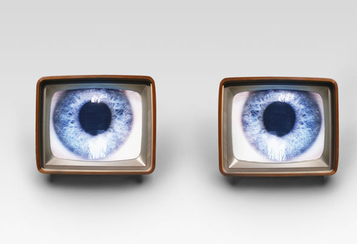

if you don't exist on the internet, you don't exist.
if you don't exist on the internet, you don't exist. I'm going to start right out by saying it: If it doesn't exist on the internet, it doesn't exist. I used to say this hyperbolically but as time has gone on, it's proved to be a truism, perhaps the paradigmatic truism  of our times.
You might deny this until you realize that much of your self-worth is derived from Googling yourself; if you don't exist on the internet, you don't exist.
You get frustrated as I do when you are researching in front of your computer and what you're looking for doesn't show up on Google. Perhaps we are at the root of the problem.
It is our obligation as educators and intellectuals to make sure that the bulk of our production ends up there, preferably with free and unfettered access to all. This means not making materials available only for those affiliated with our institution, our students, or our colleagues, but giving free and unfettered access for all. Doing so means posting our works on the world wide web so that anyone, anywhere, at any time can have access to them. In this way, we will ensure that our work exists.